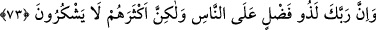
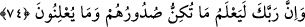

73. Şüphesiz Rabbin, insanlara karşı lütuf sâhibidir; fakat insanların çoğu
şükretmezler.
“Şüphesiz Rabbin,” bütün “insanlara karşı lütuf” ihsan ve ikram/nimet “sâhibidir;”
İşledikleri günahlar yüzünden onları cezâlandırmayı te’hir etmesi de O’nun iyilik ve
ihsanlarındandır. Onların azâbı acele istemeleri de günahlarına dâhildir.
“Fakat insanların çoğu şükretmezler.” Nimetin hakkını bilmezler, onun için de
şükretmezler. Bilakis bu kimselerin yaptığı gibi cehâletleri yüzünden azâbın acele
inmesini isterler.
Burada, yeniden diriltilmeyi inkâr edenlerin vaadedilen azâbı acele istemelerinin
işlerin hakîkatini bilme konusunda son derece câhil olduklarından ileri geldiğine işâret
vardır. Yoksa en büyük azâbın (âhiret azâbının) nümûneleri, belâlar ve sıkıntılar gibi en
yakın azâb (dünya azâbı) onlara yakın olmuştur.
“Şüphesiz Rabbin,” dünya ve ziynetlerini terk ederek, âhirete ve derecelerine rağbet
ederek havf ve haşyet ile belki Allah’ın huzuruna dönerler diye en büyük azabdan önce
en yakın azabdan onlara tattırmasında “insanlara karşı lütuf sâhibidir; fakat
insanların çoğu şükretmezler.” Çünkü onlar kendilerine verilen mihnetlerle nimetleri
birbirinden ayıramazlar. Allah’ın nimet ve fazlı ile O’nun mihnet ve intikamı arasındaki
farkı bilenler pek azdır. Kulun ilmi, salâhına olan şeyleri anlamaya kâfi gelmeyince,
kendisi için musibet olan bir şeyi hayır zannederek sevebilir. Belki de başka bir şey tam
bunun zıddı olabilir. Nice şeyler vardır ki kul onları nimet zanneder ve onun devamını
ister. Halbuki o kendisine karşı sabretmesi ve kendisinden uzaklaştırdığı için Allah’a
şükretmesi gereken bir mihnet/musîbettir. Bunun aksine olarak nice şeyler vardır ki,
insan o şeyi onun tam tersi zannedebilir. et-Te’vîlâtü’n-Necmiyye’de böyle geçmektedir.
74. Rabbin elbette onların kalplerinin gizlediklerini de, açığa vurduklarını da bilir.
Onların sözlerini ve fiillerini de bilir. Yukarıda anlatılan azâbı acele istemeleri de
buna dâhildir. Burada onların açıktan yaptıklarından başka kabahatlerinin de olduğu ve
Allah Teâlâ’nın hepsinin karşılığını vereceği bildirilmektedir.
Cüneyd (k.s.) der ki: “Allah onların göğüslerinde olan kendisinin muhabbetini ve
açığa vurdukları, kendisine hizmeti bilir.”